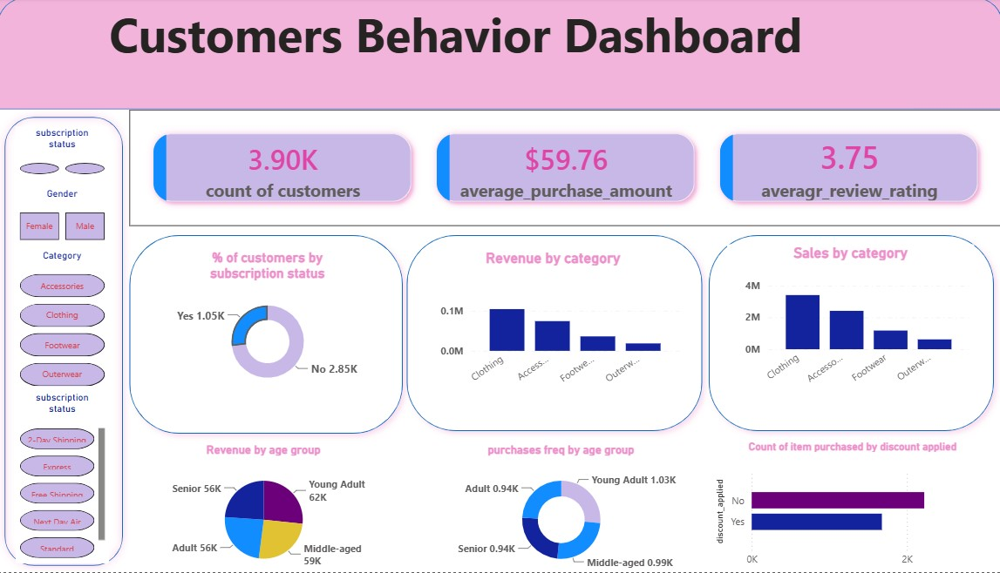
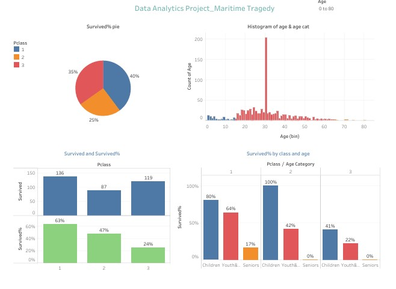
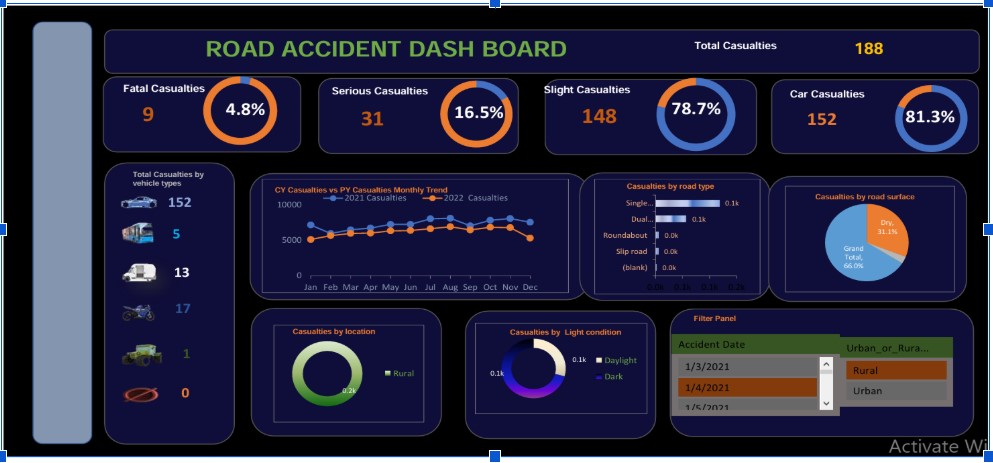
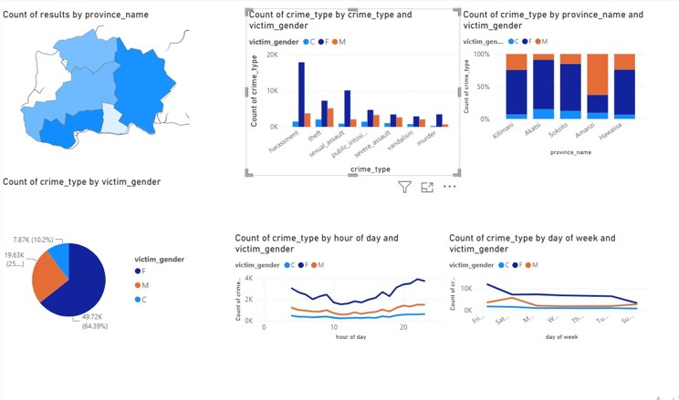
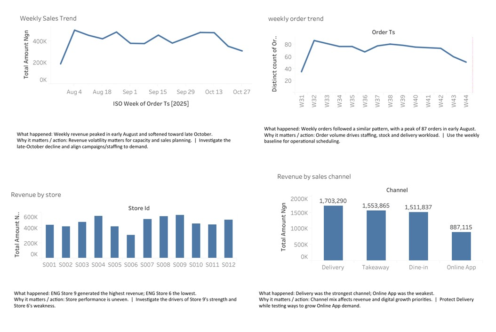
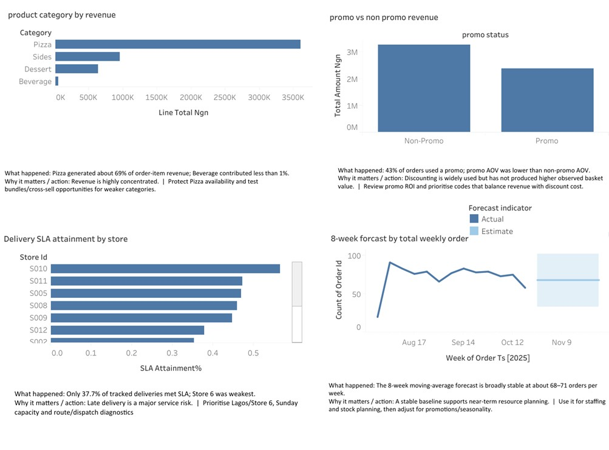
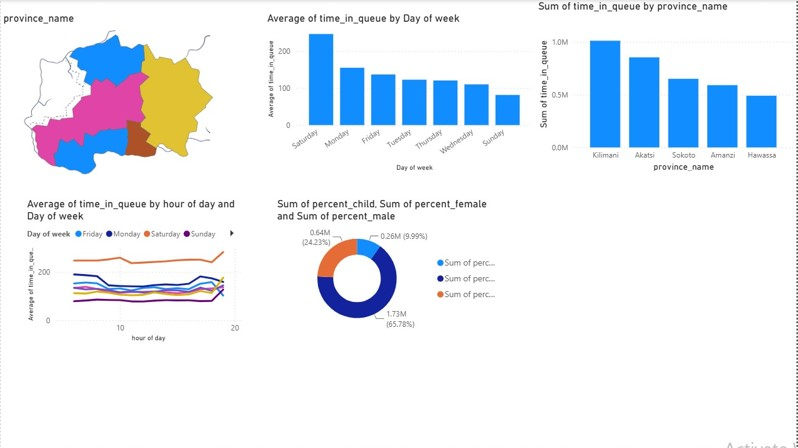

Power BI
Maji Ndogo Water Scarcity & Access
Analyzed water accessibility, queue times, locations and demand patterns to identify underserved communities and opportunities for improved water-resource allocation.
Power BIData AnalysisDashboarding

Data Exploration & Revenue Assurance professional combining business controls with practical analytics, dashboards and data-driven problem solving.
My experience sits at the intersection of financial controls, revenue assurance and data exploration.
My professional background includes revenue analysis, transaction reconciliation, internal control reviews and data exploration. I apply SQL, Python, Power BI, Tableau and Excel to turn datasets into practical insights.
A selection of dashboard and analysis projects focused on patterns, risks, customer behaviour, access and business performance.
Analyzed water accessibility, queue times, locations and demand patterns to identify underserved communities and opportunities for improved water-resource allocation.

Analyzed customer segments, subscription status, purchasing frequency and product performance to identify retention and revenue opportunities.

Examined the relationship between passenger class, age and survival outcomes, highlighting differences in survival across passenger groups.

Analyzed 188 accident casualties by vehicle type, road type, season and time trends to identify high-risk patterns and support targeted safety measures.

Analyzed crime patterns by province, victim gender, crime type and time/day to identify high-risk periods and support targeted prevention strategies.

Analyzed product/category performance, customer segments and purchasing patterns to identify revenue drivers and opportunities for customer retention and inventory improvement.

The analysis evaluates revenue performance across different product categories and compares the financial impact of promotional versus non-promotional orders. It assesses operational efficiency by tracking delivery SLA attainment across individual retail stores to identify service bottlenecks. Finally, it provides an 8-week moving-average forecast of total weekly orders to support near-term resource and stock planning.

This dashboard analyzes queue wait times and geographic distribution across different regional provinces to isolate peak service bottlenecks. It evaluates temporal patterns by tracking average queue duration by both the day of the week and specific hours of the day. Additionally, it provides a demographic breakdown of the individuals waiting in queue by age and gender categories.
Professional experience across banking, internal control, revenue assurance and data exploration.
Explored datasets using Excel, SQL and Python; performed data cleaning, transformation, visualization and exploratory analysis using Python, SQL, Power BI and Tableau; applied basic machine-learning techniques to support data-driven problem solving.
Performed high-volume reconciliations between payment gateways, merchant systems and banking partners; identified revenue leakages from failed transactions, chargeback loops and system timeouts.
Reviewed daily transactions for 78 stores, assessed financial risks, regularized control findings, conducted physical counts and cycle audits, and investigated stock variances and shrinkage.
Reviewed daily transactions and GL accounts, reconciled ATM and e-banking transactions across three cluster branches, and monitored credits and investments for compliance.
Formal education plus focused training in analytics, data science, machine learning, Python, BI and control.
Certified Data Analyst Associate
Data Camp · 2026
Google Business Intelligence Professional Certificate
Coursera · 2025
BSc Computer Science
Ahmadu Bello University, Zaria · 2023
BSc Textile Science & Technology
Ahmadu Bello University, Zaria · 2004
I'm open to Data Analyst, Business Intelligence and related opportunities where analytics can improve decisions and processes.
Email
eneji1919@gmail.com
Phone
07037691507